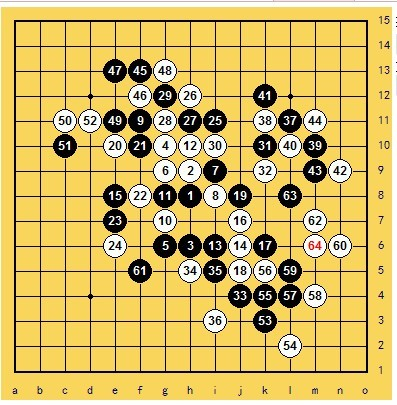

中国依然是世界上连珠最强的国家。。
#1 中国依然是世界上连珠最强的国家。。 作者：游戏人间 发表时间：2012-5-9 16:13:16
在最近的世团赛上日本取得冠军，恭喜日本夺冠的同时大批的中村粉丝开始马屁如潮。好像中村真的成神了一样。不可否认一个50多岁的老棋手有目前的实力是值得称赞的。但是也不用把中国失去冠军什么的乱七八糟理由都扣到因为日本有中村身上吧。。先不说中村缺席两轮，就算在中村没缺席的比赛中，他取胜的大部分开局也都是溪峡月，这说明什么？说明中村在日本的重点研究就是这些。而中国棋手除了要生活以外的时间，所有的精力也都放到棋院的规则上了。不同的规则必然造就不同的研究范围，那中村在自己的研究范围取胜就很正常的了。这有必要值得吹上天吗？
再来看中村在非研究范围内的表现，对梅凡瑞星取胜。好像就是这盘被很多人又是讲解又是出题什么的。好像已经是神一样的表现了。。我真的不想吐槽，可实在看不下去了。我贴两个图：

这盘是去年浙江赛我和梅凡的对局。和这次中村对梅凡一模一样的前31手。那么这盘我64开始抓梅凡44，当时虽然赢了也觉得非常的侥幸。因为在瑞星这种局面下白能取胜基本都是靠捡漏。如果执黑的是曹东这类棋手白棋根本不会有任何取胜的机会。下这种局面能输的也就是类似梅凡这样的神经刀。所以我看不出这棋能体现出中村哪里的强大。那么中村在小朱呢？一胜一负各自在自己的研究领域内取得胜利。中村胜的那盘完全是小朱不会定式被压迫下走出的无理手。更搞笑的是中村输的那盘也被人夸成最后进攻已经很强大之类的。事实上那盘棋在小朱左边做棋后就已经没有悬念了，中村后面所有的进攻按梅凡的话说就是亡命蹬腿，这和09世锦赛他输坦克一模一样。大概中村对中国棋手唯一赢的值得称道的就是对陈靖的那盘斜月。不过那个变化本来也是黑优的，黑胜概率本身就在70%，只能体现出中村的基本功非常扎实而已。
所以我就不明白了，这里那么多捧中村的脑子都清醒吗？都仔细分析过这些棋吗？
上面针对的是日本夺冠后贬低中国棋手抬高中村的言论做出的一些感慨。下面再来谈谈我对为什么没取得冠军的一点小想法。
中国没取得冠军我认为原因在两个方面：
第一：中国棋手对山口规则的研究，别扯淡什么某某人研究多少之类的，大概中国这12名棋手只有曹冬殷立成对山口规则有一定的准备。其他人谁没事闲的去准备这个。而五子棋开局阶段的研究很重要，否则一招失先就步步失先。能在准备如此匮乏的情况下4强占据3席，这本身就已经是奇迹了。而且中国哪怕这次没夺冠，后面对山口的研究依旧不会很深。因为山口规则也就是个试行规则，还能试行多久谁也不知道。这样的规则凭什么让我们的棋手去努力的研究呢。
第二：本次比赛从一开始就让大家的心理很不舒服，某棋手在比赛后就亲口对我说，感觉从一开始去就注定是配角。这样的心理压力能下出什么好棋？似乎比赛的主次已经完全颠倒了，从食宿到比赛准备到比赛进程，好像中国棋手就是给老外以及中国一队做配角去的。只要完成自己的使命就好了。能在这种影响下4强占据3席更是奇迹似的表现。
中国已经表现了棋手的厚度广度和深度。却还在不断被人找各种不足。虽然我没去参赛我都能想象出参赛棋手心中的憋闷。所以请就知道耍嘴皮子的都闭嘴吧。
［ 小丸.net 于 2012-5-9 16:16:42 时奖励此帖[金币加 100 威望加1］
［ 没事摆石子玩 于 2012-5-9 16:47:46 时花20金币送鲜花一朵］
［ 小红眼镜 于 2012-5-9 16:57:22 时花20金币送鲜花一朵］
［ 裁决殿雪月 于 2012-5-9 18:21:57 时花50金币砸了你一个臭鸡蛋］
［ 秋风雾语 于 2012-5-9 18:36:02 时花20金币送鲜花一朵］
［ 秋风雾语 于 2012-5-9 18:36:08 时花20金币送鲜花一朵］
［ 秋风雾语 于 2012-5-9 18:36:14 时花20金币送鲜花一朵］
［ 高飞 于 2012-5-9 19:52:44 时花20金币送鲜花一朵］
［ 高飞 于 2012-5-9 19:54:16 时花20金币送鲜花一朵］
［ 灯塔连珠 于 2012-5-9 20:10:44 时花50金币砸了你一个臭鸡蛋］
［ XXX 于 2012-5-9 21:40:11 时花250金币拍了你一板砖］
［ XXX 于 2012-5-9 21:40:20 时花50金币砸了你一个臭鸡蛋］
［ wuxiao 于 2012-5-10 13:09:42 时花20金币送鲜花一朵］
［ 一期一会 于 2012-5-11 0:29:30 时花20金币送鲜花一朵］
#2 Re:中国依然是世界上连珠最强的国家。。 作者：没事摆石子玩 发表时间：2012-5-9 16:48:11
必须顶一下#3 Re:中国依然是世界上连珠最强的国家。。 作者：小红眼镜 发表时间：2012-5-9 16:58:45
顺便吐槽一句。。。。据我的接触。。。殷老师在这次比赛的准备上绝对属于酱油级别。。。咳咳。#4 Re:中国依然是世界上连珠最强的国家。。 作者：没事摆石子玩 发表时间：2012-5-9 17:07:50
中国不仅是现在最强 在以后相当长的一个时期内 大概10年至少 都将处于世界第一五子棋强国的位置上 这一点是肯定的 就看可以包揽2 3 4名就知道 换了别的任何一个国家组队 达不到这个成绩。 这次如果不是运气差了点，加上各方面的原因，本来是可以留住这个世界冠军的。完全不能同意有的人的观点，把责任归于比赛棋手不团结是完全不合适的。还有更好玩的，事先不知道和谁一队并不重要？ 明天比赛 今天告诉我你和九指 道道 牛牛一队 和一个月前告诉我们没有任何区别 ？ 反正是你们4个一起 人没变 这就OK了？ 如果真是这样 那所谓的赛前准备就根本没用 可事实是这样吗？ 别的国家有这种情况么？本来的天时地利人和被我们弄成了这样 不能反思 还要找棋手的毛病？ 而且我这里可以大胆做一个预测 下次世团赛只要有选拔 有充分的准备 中国就一定可以夺取冠军 一个队去国外打没有任何问题。［ 秋风雾语 于 2012-5-9 18:36:29 时花20金币送鲜花一朵］
［ 秋风雾语 于 2012-5-9 18:36:38 时花20金币送鲜花一朵］
［ 秋风雾语 于 2012-5-9 18:36:47 时花20金币送鲜花一朵］
#5 Re:中国依然是世界上连珠最强的国家。。 作者：一尘 发表时间：2012-5-9 18:31:01
这里都谁捧中村了? 没有看到一篇帖子捧中村呀#6 Re:中国依然是世界上连珠最强的国家。。 作者：秋风雾语 发表时间：2012-5-9 18:40:26
大鱼的最后一句话很重点。那些往棋手身上推了种种责任的童鞋需要牢记，谨记，再加铭记！
#7 Re:中国依然是世界上连珠最强的国家。。 作者：没事摆石子玩 发表时间：2012-5-9 18:43:19
中国整体的强盛和中村超强的个人水平 本来就是不相关的两个命题 没有必然或者互相排斥的关系 不能否认中村很强，但是其他那几个日本棋手 来中国打全国赛 也就20名左右的水平 乐观估计。 中国没有夺冠和中村发挥得出色根本没有必然关系，我们如果做得够好中村一个人打得好能撑得起日本最后夺冠吗？ 笑话都是 不过他们确实准备充分 弥补了实力的不足 另外 日本队精神很顽强 值得我们学习#8 Re:中国依然是世界上连珠最强的国家。。 作者：一尘 发表时间：2012-5-9 18:46:45
本来就是不相关的两个命题 没有必然或者互相排斥的关系 +1#9 Re:中国依然是世界上连珠最强的国家。。 作者：周光乐 发表时间：2012-5-9 19:37:04
定下~~~~#10 Re:中国依然是世界上连珠最强的国家。。 作者：灯塔连珠 发表时间：2012-5-9 20:44:25
牛还是吹的那么响，语言还是那样犀利，一个让人爱憎分明的个性人物。［ 极地剑客 于 2012-5-11 12:20:23 时花20金币送鲜花一朵］
#11 Re:中国依然是世界上连珠最强的国家。。 作者：三道 发表时间：2012-5-9 22:10:17
你很强
#12 Re:中国依然是世界上连珠最强的国家。。 作者：三道 发表时间：2012-5-9 22:29:29
盛名之下其实难副。说中村是神，是过，他是人，这个大家都晓得。说他是神，是大家都拜服于他对连珠的执著，这么大的年纪，并且还能下出这么好的棋。可以捧高他，但绝不应该去贬低他。我想每个人，都有个精神偶像，而偶像这东西，在楼主09年拿到，包括令我在内的五子棋迷振奋的世锦赛冠军（虽然这个世锦赛，我猜的没错的话，如今在楼主脑子里也只是屎）已经消失了。这种偶像的消失，势必使楼主对于五子棋有一种居高临下气势，注意不是五子棋手，是对于五子棋。因为楼主根本不再可能再去崇拜哪个五子棋手了。
［ 小红眼镜 于 2012-5-9 23:17:26 时花20金币送鲜花一朵］
［ 灯塔连珠 于 2012-5-10 9:59:05 时花20金币送鲜花一朵］
#13 Re:三道【==Re:中国依然是世界上连珠最强的国家。。==】 作者：第五象限 发表时间：2012-5-9 22:57:44
引用：楼主07年拿的冠军
原文由 三道 发表于 2012-5-9 22:29:29 :盛名之下其实难副。说中村是神，是过，他是人，这个大家都晓得。说他是神，是大家都拜服于他对连珠的执著，这么大的年纪，并且还能下出这么好的棋。可以捧高他，但绝不应该去贬低他。我想每个人，都有个精神偶像，而偶像这东西，在楼主09年拿到，包括令我在内的五子棋迷振奋的世锦赛冠军（虽然这个世锦赛，我猜的没错的话，如今在楼主脑子里也只是屎）已经消失了。这种偶像的消失，势必使楼主对于五子棋有一种居高临下气势，注意不是五子棋手，是对于五子棋。因为楼主根本不再可能再去崇拜哪个五子棋手了。
#14 Re:中国依然是世界上连珠最强的国家。。 作者：南京小飞机 发表时间：2012-5-9 23:04:19
喜欢周杰伦的！！！
谁让你崇拜的！！！
不许是周杰伦的粉丝！！！
周杰伦经常唱歌走调，
舞跳的那么垃圾！！！
你不信？？？
不信我马上找个视频看看周杰伦唱歌怎么走调的！！！
周杰伦唱的好的全是假唱！！！
都是事先录好音做好准备的！！
现场唱的完全不值得一提！！！
喜欢周杰伦的都清醒点吧！！！
周杰伦是过气明星了！！！！
中国 队 夺冠 了！！！
中国舞蹈演唱队12名演员中，
在 仅有2 个人有一定准备的情况下 ；
在二三队
#15 Re:中国依然是世界上连珠最强的国家。。 作者：三道 发表时间：2012-5-9 23:04:58
哦对，那就是09年跟曹冬下了。令人振奋的瑞星和棋的。时光飞逝，转眼5年就过去了。#16 Re:中国依然是世界上连珠最强的国家。。 作者：山城刀客 发表时间：2012-5-9 23:26:45
大鱼话语中透着酸酸的傲气，俨然一副五子棋盟主之面容，对于中村茂，我想你一定是怀着羡慕、嫉妒以至于狠的心态吧！我想说的是，事实是检验真理的标准！53岁高龄中村茂带领日本队顽强战胜中国队取得冠军，首先要说的是日本队发挥很出色，其次中国队确实存在一些问题，日本夺冠绝对是团队的力量，而非中村一人！对于一个如此高龄的五子棋手，除了敬意和感慨，我们还能做什么？人品某种意义上也决定了棋能所达到的高度，低调，谦逊，宽容，平和……
而大鱼呢？许多年前是我的偶像，后来渐渐让我心里有种说不出的失望！07年世锦赛的辉煌恐怕也只是昙花一现吧！因为你心灵的高度离中村还有很大的差距，飘飘然，盲目的自以为是，这辈子赶上中村怕是无望了！……
话语也许刻薄了，都是肺腑之言。
［ 灯塔连珠 于 2012-5-10 10:00:17 时花20金币送鲜花一朵］
［ 啊呆 于 2012-5-10 11:30:32 时花20金币送鲜花一朵］
#17 Re:中国依然是世界上连珠最强的国家。。 作者：tears 发表时间：2012-5-10 0:32:31
棋盘上确实没有神，但是有王，胜者为王。［ 悟石 于 2012-5-10 0:35:49 时花20金币送鲜花一朵］
［ 小红眼镜 于 2012-5-10 0:42:46 时花20金币送鲜花一朵］
［ 白衣神童小剑魔 于 2012-5-10 9:41:57 时花20金币送鲜花一朵］
［ 啊呆 于 2012-5-10 11:32:19 时花20金币送鲜花一朵］
#18 Re:中国依然是世界上连珠最强的国家。。 作者：极地剑客 发表时间：2012-5-10 11:51:43
围观3楼妹妹～#19 Re:中国依然是世界上连珠最强的国家。。 作者：周光乐 发表时间：2012-5-10 12:45:09
大鱼还不错啊，有啥说啥，说了大家心里的一些话，其实这次中国队应该拿冠军的，这不都在分析原因为什么没拿到么。至于那些攻击大鱼的，说什么大鱼不如中村，这说实话不是一个领域的，况且大鱼也灭过中村，看谁的研究领域啊，让中村来中国参加rif规则，他必然会被蹂躏，当然，山口规则是他的领域，显得强大也正常，大鱼也没有否定。本帖的中心思想我总结一下，就是说五子棋没有神，大家不必过多神话中村，敬重下就行了，重要的是做好自己的事，即使他是神，也能干翻。。中国加油。［ 锐 于 2012-5-10 13:04:18 时花20金币送鲜花一朵］
［ 锐 于 2012-5-10 13:04:42 时花20金币送鲜花一朵］
［ 锐 于 2012-5-10 13:04:59 时花20金币送鲜花一朵］
［ 锐 于 2012-5-10 13:05:18 时花20金币送鲜花一朵］
［ 锐 于 2012-5-10 13:05:35 时花20金币送鲜花一朵］
［ 锐 于 2012-5-10 13:05:54 时花20金币送鲜花一朵］
［ 锐 于 2012-5-10 13:06:12 时花20金币送鲜花一朵］
#20 Re:中国依然是世界上连珠最强的国家。。 作者：黑白之道 发表时间：2012-5-10 15:43:25
辩来辩去，真的没啥意思！
别的都没细看，只是“这辈子赶上中村怕是无望了”这句话觉得确实有些道理。
当然我要补充一句：如果不改变心态，如果不放下自卑的虚荣。。。
［ 极地剑客 于 2012-5-11 7:23:07 时花20金币送鲜花一朵］
#21 Re:中国依然是世界上连珠最强的国家。。 作者：与郎共五 发表时间：2012-5-10 17:47:12
其实带期望的批评都是忠恳的#22 Re:中国依然是世界上连珠最强的国家。。 作者：抛一块 发表时间：2012-5-10 21:40:44
同意除“屁”字以外的都不是屁。［ 没事摆石子玩 于 2012-5-11 0:57:23 时花50金币砸了你一个臭鸡蛋］
#23 Re:山城刀客【==Re:中国依然是世界上连珠最强的国家。。==】 作者：茗弈的飞猪 发表时间：2012-5-11 14:37:16
说的不错，有人总是虚怀若谷，有人取得点成绩就容易膨胀，大鱼显然属于后者。再加上嘴上没点把门的，不知道惹多少人讨厌而不自知。#24 Re:中国依然是世界上连珠最强的国家。。 作者：釣鱼岛岛主 发表时间：2012-5-14 23:58:09
中国依然是世界上连珠最强的国家#25 Re:中国依然是世界上连珠最强的国家。。 作者：有志青年 发表时间：2012-5-15 9:13:09
不可以回复？